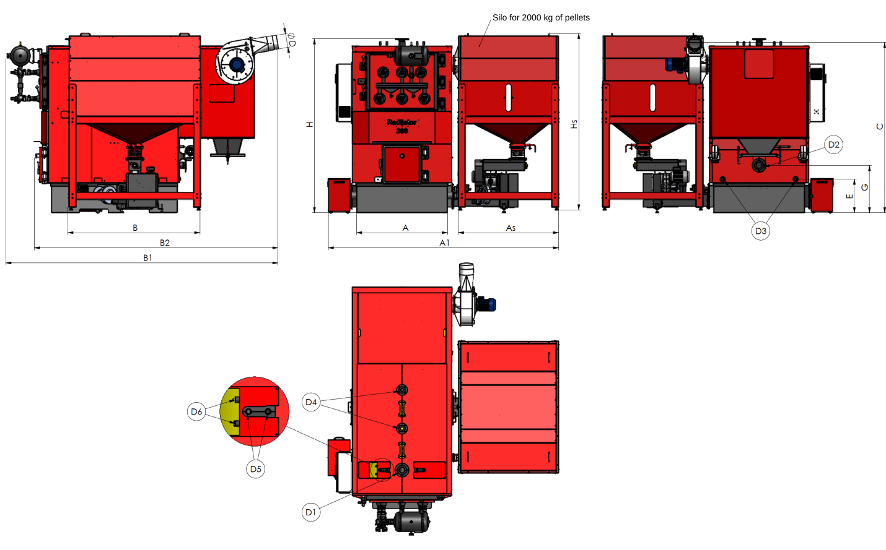

About us
In business terms, Radijator Inženjering d.o.o. is the legal successor to the Radijator craft business, founded in 1991, whose main activity was the installation and maintenance of central heating systems. We manufactured our first hot water boiler for solid fuel in 1985.
The company has operated in its current form since 2002 and has made substantial progress year after year, always striving to lead in the adoption of new technologies, product quality and entry into new European markets.
As we expanded and improved production, we reached the point where we manufacture boilers using the most advanced technologies available worldwide. Our sheet metal cutting processes include laser cutting, CNC plasma cutting and CNC punching. We carry out welding using robots and automatic welding equipment. The annual growth in production is one of the clearest indicators of the quality of our products and services.
Today, Radijator Inženjering employs more than 350 people, including 40 graduate mechanical engineers who work every day to improve product quality.
ISO 9001:2008 quality management system certification confirms the consistent quality of both our products and our business operations.
Radijator Inženjering is a Serbian manufacturer of biomass boilers with a long tradition, recognised for reliable and technologically advanced heating solutions. By developing our own production processes and applying modern technologies, we create products that meet the highest market requirements for quality, efficiency and long service life.
Our production range includes boilers with outputs from 6 to 600 kW, intended for heating family homes, residential and commercial buildings, public institutions and industrial facilities. Our extensive product range and ability to build cascade systems allow us to offer an optimum solution for every building and every requirement.
The quality of our products comes from carefully selected materials, precision manufacturing and rigorous quality control at every stage of the process. We develop every boiler to deliver maximum energy efficiency, reliable operation and long-term use with minimal maintenance costs.
We pay particular attention to innovation and improvements in production technology to provide customers with modern solutions that combine a high level of automation, simple operation and maximum energy utilisation.
We design and manufacture all our products in accordance with applicable European standards and regulations for boilers, confirming their safety, reliability and high quality.
By choosing Radijator Inženjering boilers, you choose a Serbian product, proven quality and a partner whose experience, expert support and complete system solutions provide dependable support throughout the life of your heating system.
A company with 35 years of experience in designing, manufacturing and innovating boilers that heat thousands of buildings across Europe!
Technology and quality
Production to modern European standards


As production expanded and improved, we began manufacturing boilers using the latest technologies: laser cutting, CNC plasma cutting, CNC punching, robotic welding and automatic welding equipment.
Today, Radijator Inzenjering employs more than 350 people, including 40 graduate mechanical engineers who work every day to improve product quality.
PRODUCT RANGE - INDUSTRY

TKAN series
Our industrial biomass boilers use boiler steel plates at least 6 mm thick. The heat exchanger uses seamless boiler tubes. Efficiency exceeds 90% when burning pellets. At higher operating loads, the flue gas temperature at the outlet ranges from 170 to 190 degrees Celsius and can always be checked on the control display. Available outputs range from 60 to 300 kW.

TKAN Integra series
This industrial biomass boiler is an improved version of the standard TKAN boiler. It features a refractory-lined combustion chamber, more advanced controls and a wider range of auxiliary equipment, providing greater reliability, improved combustion efficiency and broader applications. It uses boiler steel plates at least 6 mm thick and a heat exchanger made of seamless boiler tubes. Efficiency exceeds 90%. Available outputs range from 80 to 600 kW.

Cascade systems
Cascade systems combine two or more boilers in a single system with a shared pellet storage silo. This configuration provides greater total installed output, more reliable operation, balanced load distribution and higher system energy efficiency.

Additional equipment
Alongside boilers, we offer a complete range of auxiliary equipment for a fully functional heating system. The range includes pellet storage silos, screw conveyors, elevators, buffer tanks, controls and other equipment needed for reliable pellet transport, dosing and control, as well as safe and efficient operation of the entire system.
TKAN HOT WATER PELLET BOILER WITH AUTOMATIC FUEL FEED
(Available outputs: 60-300 kW.) RADIJATOR INŽENJERING developed the TKAN boiler to offer the market a boiler with mechanical and thermal properties specifically suited to biomass fuel. At the same time, the market consistently demands greater fuel flexibility, so the TKAN can also burn wood, which requires manual loading.
In its external design, combustion chamber dimensions, and fuel-loading and cleaning openings, the TKAN retains all the strengths of earlier models for which RADIJATOR INŽENJERING is known in the market. The boiler's water section and the transfer of heat from flue gases to water through a tubular heat exchanger are adapted to biomass. The use of a fan, providing forced draught, creates a longer flue gas path than in standard boilers. This also allows the use of flue gas flow devices known as turbulators, which further increase boiler efficiency. The turbulators are spirals made from a special material.
Efficiency exceeds 90% when burning pellets. Under normal operating conditions, the flue gas temperature at the outlet is approximately 160 °C, and at maximum output it remains below 180 °C. These values can be read on the display at any time.
All components of the boiler's water section use seamless ST 35.4 tubes and boiler steel plates at least 5 mm thick, depending on boiler output. The plates are grade 1.0425 under the EU standard, or P265GH under the EUII standard. The combustion chamber operates on an underfeed principle: fuel moves vertically upwards from the conveying zone into the combustion zone. It uses substantial insulating materials and grey cast iron. Screw conveyors transport the fuel.
Table 1. Available outputs
| BOILER TYPE | BOILER TYPE | BOILER TYPE | TKAN 60 | TKAN 80 | TKAN 100 | TKAN 150 | TKAN 200/250/300 |
|---|---|---|---|---|---|---|---|
| Unit | |||||||
| Output | Output | kW | 60 | 80 | 100 | 150 | 200/250/300 |
| Operating pressure | Operating pressure | kPa | 300 | 300 | 300 | 300 | 300 |
| Test pressure | Test pressure | kPa | 450 | 450 | 450 | 450 | 450 |
| Boiler water volume | Boiler water volume | L (approx.) | 276 | 368 | 460 | 690 | 920/1150/1380 |
| Boiler weight | Boiler weight | kg | 655 | 915 | 1073 | 1665 | 2260/2800/3080 |
| Silo weight | Silo weight | kg | 106 | 100 | 110 | 162 | 180/220/220 |
| As | mm | 610 | 610 | 810 | 1010 | 1394 | |
| Dimensions | B | mm | 1020 | 1020 | 1176 | 1456 | 1830 |
| Dimensions | Hs | mm | 1740 | 1736 | 1611 | 1875 | 1822/1822/2070 |
| V | L | 290 | 305 | 680 | 1600/2330/3115 | ||
| Pellet capacity of the silo | Pellet capacity of the silo | kg | 180 | 190 | 410 | 1000/1500/2000 |


TKAN BOILER CROSS-SECTION

- Turbulators
- Tubular heat exchanger
- Access door for cleaning the tubular heat exchanger and boiler
- Electrical cabinet with controls
- Ash container
- Fuel-loading and ignition door
- Auger for automatic ash removal from the combustion chamber
- Boiler combustion chamber
- Cast iron segments
- Drive motor for the auger that automatically cleans the combustion chamber
- Lower screw conveyor shaft
- Rotary feeder (rotary valve)
- Upper screw conveyor shaft
- Thermal safety heat exchanger
TKAN BOILER DIMENSIONS

| DIMENSIONS | DIMENSIONS | DIMENSIONS | TKAN 60 | TKAN 80 | TKAN 100 | TKAN 150 | TKAN 200 | TKAN 250 | TKAN 300 | |
|---|---|---|---|---|---|---|---|---|---|---|
| A | mm | mm | 680 | 730 | 730 | 850 | 1005 | 1260 | 1260 | |
| A1 | mm | mm | 1355 | 1788 | 2080 | 2395 | 2945 | 3456 | 3455 | |
| As | mm | mm | 610 | 610 | 810 | 1010 | 1394 | 1394 | 1394 | |
| B | mm | mm | 1020 | 1020 | 1176 - 1286 | 1456 | 1830 | 1830 | 1830 | |
| B1 | mm | mm | 1518 | 1565 | 1727 | 2070 | 2121 | 2546 | 2546 | |
| C | mm | mm | 1125 | 1573 | 1573 | 1681 | 2044 | 2114 | 2114 | |
| ØD | mm | mm | 200 | 200 | 200 | 250 | 250 | 300 | 300 | |
| E | mm | mm | 675 | 417 | 417 | 785 | 675 | 707 | 707 | |
| G | mm | mm | 360 | 389 | 389 | 360 | 465 | 467 | 467 | |
| H | mm | mm | 1564 | 1960 | 1960 | 2151 | 2547 | 2663 | 2663 | |
| Hs | in. | in. | 1740 | 1736 | 1611 | 1875 | 1822 | 1822 | 2070 | |
| D1 | in. | in. | 6/4" | 2" | 2" | 2" | DN80 NP6 | DN80 NP6 | DN80 NP6 | |
| D2 | in. | in. | 6/4" | 2" | 2" | 2" | DN80 NP6 | DN80 NP6 | DN80 NP6 | |
| D3 | in. | in. | 1/2" | 1/2" | 1/2" | 1/2" | 1" | 1" | 1" | |
| D4 | in. | in. | 3/4" | 3/4" | 3/4" | 3/4" | DN40 NP16 | DN40 NP16 | DN40 NP16 | |
| D5 | in. | in. | 1/2" | 1/2" | 1/2" | 1/2" | 1/2" | 1/2" | 1/2" | |
| D6 | in. | in. | 1/2" | 1/2" | 1/2" | 1/2" | 1/2" | 1/2" | 1/2" | |
TKAN SILO DIMENSIONS

| DIMENSIONS | DIMENSIONS | DIMENSIONS | DIMENSIONS | DIMENSIONS | |
|---|---|---|---|---|---|
| A | B | H | V | Pellet capacity of the silo | |
| mm | mm | mm | L | kg | |
| TKAN 80 | 606 | 1020 | 1736 | 290 | 180 |
| TKAN 100 | 810 | 1176 | 1611 | 305 | 190 |
| TKAN 150 | 1010 | 1456 | 1875 | 680 | 410 |
| TKAN 200/250/300 | 1394 | 1830 | 1828 | 1600 | 1000 |
| TKAN 200/250/300 | 1394 | 1830 | 2138 | 2330 | 1500 |
| TKAN 200/250/300 | 1394 | 1830 | 2448 | 3115 | 2000 |
TKAN INTEGRA HOT WATER PELLET BOILER WITH AUTOMATIC FUEL FEED, DUST REMOVAL AND CYCLONE
(Available outputs: 80-600 kW.)
TKAN INTEGRA is a new generation of industrial biomass boilers, developed as an improvement on the standard TKAN model. It responds to market demand for greater automation, higher energy efficiency and more reliable operation, while retaining all the proven design solutions for which RADIJATOR INŽENJERING is known.
With its refractory-lined combustion chamber, improved combustion system, modern controls and more extensive standard equipment, TKAN INTEGRA provides stable operation, maximum energy utilisation and a long service life for all key components. The boiler structure uses high-quality boiler steel plates at least 6 mm thick, and the tubular heat exchanger uses seamless boiler tubes, ensuring high mechanical strength, reliability and a long system service life.
The refractory-lined combustion chamber is one of the key advantages of the TKAN INTEGRA model. This design enables complete and stable fuel combustion, minimal emissions of harmful gases and dust particles, and maximum utilisation of the energy in pellets. At the same time, the boiler's steel components have no direct exposure to the flame, significantly extending boiler service life.
A cyclone reduces the quantity of particles entering the chimney. Larger configurations use a multicyclone with a centrifugal fan. The manufacturer particularly recommends a cyclone when using pneumatic heat exchanger cleaning, as this expels additional ash and soot from the boiler. Larger TKAN Integra models use a multicyclone with a centrifugal fan. Specifically, the TKAN 80 Integra and TKAN 100 Integra have a fan on the flue outlet, while the TKAN 150 Integra, TKAN 200 Integra, TKAN 250 Integra and TKAN 300 Integra have a multicyclone with a centrifugal fan.
Some TKAN configurations use a fan on the flue gas side, while larger systems may have a multicyclone equipped with a centrifugal fan. This matters when designing the complete chimney system, particularly where there are several boilers, a longer flue duct, a cyclone or multicyclone, multiple bends or a shared chimney.
TKAN INTEGRA boilers include an automatic cleaning system for the area around the combustion chamber as standard. Compressed air automatically cleans the tubular heat exchanger. Periodic air pulses remove soot deposits from the flue tubes, maintain high boiler efficiency and significantly reduce the need for manual maintenance.

| BOILER TYPE | BOILER TYPE | BOILER TYPE | TKAN 80 Integra | TKAN 100 Integra | TKAN 150 Integra | TKAN 200/250/300 Integra |
|---|---|---|---|---|---|---|
| Unit | ||||||
| Output | Output | kW | 80 | 100 | 150 | 200/250/300 |
| Operating pressure | Operating pressure | kPa | 300 | 300 | 300 | 300 |
| Test pressure | Test pressure | kPa | 450 | 450 | 450 | 450 |
| Boiler water volume | Boiler water volume | L (approx.) | 368 | 460 | 690 | 920/1150/1380 |
| Boiler weight | Boiler weight | kg | 1191 | 1415 | 2288 | 3240/5293/5605 |
| Silo weight | Silo weight | kg | 100 | 165 | 165 | 225 |
| As | mm | 606 | 1006 | 1006 | 1394 | |
| Dimensions | B | mm | 1020 | 1456 | 1456 | 1830 |
| Dimensions | Hs | mm | 1736 | 1872 | 1872 | 1822 |
| V | L | 290 | 680 | 680 | 1600/2330/3115 | |
| Pellet capacity of the silo | Pellet capacity of the silo | kg | 180 | 410 | 410 | 1000/1500/2000 |


TKAN INTEGRA BOILER CROSS-SECTION

- Turbulators
- Tubular heat exchanger
- Access door for cleaning the tubular heat exchanger and boiler
- Electrical cabinet with controls
- Compressed air vessel
- Pulse solenoid valve
- Fuel-loading and ignition door
- Ash container
- Combustion chamber refractory lining
- Auger for automatic ash removal from the combustion chamber
- Drive motor for the auger that automatically cleans the combustion chamber
- Cast iron segments
- Boiler combustion chamber
- Lower screw conveyor shaft
- Rotary feeder (rotary valve)
- Upper screw conveyor shaft
- Multicyclone centrifugal fan
- Multicyclone
- Thermal safety heat exchanger

| DIMENSIONS | DIMENSIONS | TKAN 80 Integra | TKAN 100 Integra | TKAN 150 Integra | TKAN 200 Integra | TKAN 250 Integra | TKAN 300 Integra | |
|---|---|---|---|---|---|---|---|---|
| A | mm | 730 | 730 | 850 | 1005 | 1380 | 1380 | |
| A1 | mm | 1788 | 2276 | 2394 | 2942 | 3200 | 3200 | |
| As | mm | 606 | 1006 | 1006 | 1394 | 1394 | 1394 | |
| B | mm | 1020 | 1456 | 1456 | 1830 | 1830 | 1830 | |
| B1 | mm | 1655 | 1817 | 3099 | 3386 | 3755 | 3755 | |
| B2 | mm | 1595 | 1767 | 2729 | 2988 | 3360 | 3360 | |
| C | mm | 1507 | 1507 | 2080 | 2515 | 2312 | 2312 | |
| ØD | mm | 180 | 200 | 190 | 190 | 190 | 190 | |
| E | mm | 390 | 390 | 359 | 465 | 467 | 467 | |
| G | mm | 417 | 417 | 784 | 675 | 707 | 707 | |
| H | mm | 1960 | 1960 | 2151 | 2547 | 2413 | 2413 | |
| Hs | in. | 1736 | 1872 | 1872 | 1822 | 1822 | 1822 | |
| D1 | in. | 2" | 2" | 2" | DN80 NP6 | DN80 NP6 | DN80 NP6 | |
| D2 | in. | 2" | 2" | 2" | DN80 NP6 | DN80 NP6 | DN80 NP6 | |
| D3 | in. | 1/2" | 1/2" | 1/2" | DN40 NP16 | DN40 NP16 | DN40 NP16 | |
| D4 | in. | 3/4" | 3/4" | 3/4" | DN40 NP16 | DN40 NP16 | DN40 NP16 | |
| D5 | in. | 1/2" | 1/2" | 1/2" | 1" | 1" | 1" | |
| D6 | in. | 1/2" | 1/2" | 1/2" | 1/2" | 1/2" | 1/2" | |
| Mass flow rate (kg/h) | Mass flow rate (kg/h) | 313 | 468 | 878 | 1116 | 1353 | 1461 |
TKAN INTEGRA SILO DIMENSIONS

| DIMENSIONS | DIMENSIONS | DIMENSIONS | DIMENSIONS | DIMENSIONS | |
|---|---|---|---|---|---|
| A | B | H | V | Pellet capacity of the silo | |
| mm | mm | mm | L | kg | |
| TKAN 80 Integra | 606 | 1020 | 1736 | 290 | 180 |
| TKAN 100 Integra | 1006 | 1456 | 1872 | 680 | 410 |
| TKAN 150 Integra | 1006 | 1456 | 1872 | 680 | 410 |
| TKAN 200/250/300 Integra | 1394 | 1830 | 1828 | 1600 | 1000 |
| TKAN 200/250/300 Integra | 1394 | 1830 | 2138 | 2330 | 1500 |
| TKAN 200/250/300 Integra | 1394 | 1830 | 2448 | 3115 | 2000 |
POSITIONING TKAN AND TKAN INTEGRA BOILERS IN THE BOILER ROOM

Positioning the boiler in the boiler room
| DIMENSIONS | DIMENSIONS | DIMENSIONS | DIMENSIONS | |
|---|---|---|---|---|
| Boiler type | A (mm) | B (mm) | C (mm) | D (mm) |
| TKAN 60 | 100 | 400 | 1000 | 800 |
| TKAN 80 | 500 | 400 | 1000 | 800 |
| TKAN 100 | 500 | 400 | 1000 | 800 |
| TKAN 150 | 500 | 550 | 1000 | 1000 |
| TKAN 200 | 600 | 650 | 1000 | 1000 |
| TKAN 250 | 600 | 900 | 1000 | 1100 |
| TKAN 300 | 600 | 900 | 1000 | 1100 |
| TKAN 80 Integra | 500 | 400 | 1000 | 800 |
| TKAN 100 Integra | 500 | 400 | 1000 | 800 |
| TKAN 150 Integra | 500 | 550 | 1000 | 1000 |
| TKAN 200 Integra | 600 | 650 | 1000 | 1000 |
| TKAN 250 Integra | 600 | 900 | 1000 | 1100 |
| TKAN 300 Integra | 600 | 900 | 1000 | 1100 |
The boiler room must have protection against freezing. The boiler must stand on a non-combustible surface. The table and illustration show the recommended clearances on all four sides of the boiler from the boiler room walls or other fixed objects, such as a thermal storage tank.
CASCADE SYSTEMS
Radijator Inženjering developed the TKAN boiler series primarily for burning biomass, including pellets and fruit stones, and wood. Connecting these boilers in cascade systems creates a highly powerful and flexible heating solution for large buildings.
TKAN boilers in cascade applications
- Cascade systems most commonly use industrial models with higher outputs, such as the TKAN 100, 150, 200, 250 and 300 kW models.
- High output requirements: Connecting two TKAN 300 boilers in a cascade, for example, creates a system with a total output of 600 kW, suitable for heating hotels, production halls or residential complexes.
- Modularity and flexibility: During autumn and spring, only one TKAN boiler operates at its optimum load, while the second starts only when the outside temperature falls significantly.
Features of TKAN cascade systems
Modularity and flexibility: During autumn and spring, only one TKAN boiler operates at its optimum load, while the second starts only when the outside temperature falls significantly.
Control and automation: TKAN boilers have advanced electronics that enable synchronised operation through external cascade controllers. The controls monitor the temperature in the hydraulic separator and determine which boiler should start.
Continuous fuel supply: Industrial TKAN boilers come with day silos, for example with an 800-litre capacity, which can connect through additional screw conveyors to a single large central pellet silo supplying the entire cascade.
Reliability and continuity: If one boiler requires ash cleaning or routine servicing, the hydraulic system and cascade controls allow the other boiler to continue operating without interruption, so the building always has heating.
ADDITIONAL EQUIPMENT
For reliable and efficient operation of industrial boiler installations, the system can include additional components adapted to the building's requirements and operating conditions.
Additional equipment includes automatic fuel dosing and transport systems, pellet storage, automated operating controls, and equipment for connecting boilers and controlling them in cascade.
We design solutions around boiler room capacity, the required duration of unattended operation and available space, aiming for a high level of automation, reliability and optimum fuel consumption.
- Two screw augers, each with its own electric drive, provide automatic ash removal in the combustion chamber area. They transfer ash into two containers that require periodic emptying.
- A system of solenoid valves on the tubular heat exchanger access door periodically releases pressurised air to clean ash and soot from the boiler tubes. The system requires a compressed air supply of suitable capacity and controls to manage the process.
- To reduce airborne ash particle emissions, the manufacturer recommends installing a cyclone, particularly where the customer has also installed a pneumatic cleaning system.
- For large systems consuming from several hundred kilograms to several tonnes of pellets per day, the manufacturer recommends a large silo with a bucket elevator. Screw conveyors connect it to the small silo, and minimum and maximum level sensors in the small silo automate the entire delivery process.


LARGER DAY SILO
Standard TKAN boilers have a day silo. For larger systems, the manufacturer can produce larger external silos with custom dimensions. Depending on system requirements, silos with capacities of several tens of tonnes can include a bucket elevator.
Screw conveyors connect the large external silo to the boiler's day silo, allowing automatic refilling controlled by minimum and maximum level sensors. Jumbo bags can also store larger quantities of pellets.
On newer TKAN 60-300 models, the standard day silo has a volume of 800 litres and can connect to a large external silo. The connection can run from the side or the front, depending on the equipment arrangement and available space. The fuel delivery sequence is:
Large central silo, screw conveyor, TKAN day silo, auger to the combustion chamber


AUTOMATIC PELLET TRANSPORT
The manufacturer provides for screw conveyors, screw conveyor drives and motors, connections between the large silo and the day silo, automatic day silo refilling, and minimum and maximum level sensors in the day silo.
For large systems, the manufacturer recommends a large silo with a bucket elevator, screw conveyors and automatic day silo refilling controlled by minimum and maximum level sensors. Jumbo bags can also store larger quantities of pellets.
The boiler controls can operate the motor of the auger conveying pellets from the large silo.
This is particularly useful for a cascade of several TKAN boilers, as it allows the design of a central pellet distribution system.
Automatic day silo refilling uses minimum and maximum level sensors. At MIN, pellet transport starts. At MAX, pellet transport stops. The boiler therefore requests fuel from central storage automatically and requires no manual refilling.